Parametric surfaces
A surface can in principle be described by a two-parameter vector function r(u,v).
As usual, it's a good idea to tell Maple that the parameters are real.
| > | assume(u,real,v,real); |
For example, the cone we have seen many times before as an implicit function,
| > | implicitplot3d( x^2+y^2=z^2, x=-1..1, y=-1..1, z=-1..1 ); |
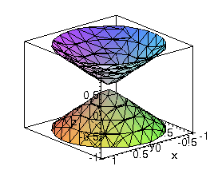
is much better displayed in parametric form. (Here we mean the position vector r, not the cylindrical coordinate r.)
| > | r:= < u*cos(v), u*sin(v), u >; |
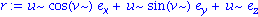
Note here that x^2 + y^2 does in fact equal z^2:
| > | simplify(r[1]^2 + r[2]^2 - r[3]^2 ); |

plot3d accepts parametric forms directly.
| > | plot3d( r, u=-1..1, v=0..2*Pi, labels=["x","y","z"] ); |
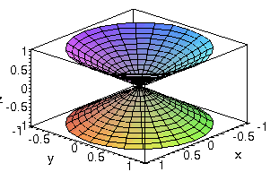
A sphere is naturally expressed using the angles in spherical coordinates as the two parameters.
| > | r:= < 2*sin(u)*cos(v), 2*sin(u)*sin(v), 2*cos(u) >; |
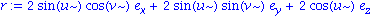
| > | plot3d( r, u=0..Pi, v=0..2*Pi, scaling=constrained ); |
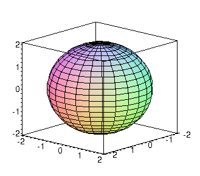
When a surface has one variable that can be expressed explicitly in terms of the other two, the independent ones can be used as the parameters.
For example, to get the part of the surface x + y^2 + z^2 = 9 that has nonnegative x, we first note that x=f(y,z). The requirement on x implies that y^2 + z^2 is less than 9. This is the interior of a circle. We can express this surface as
| > | r:= < 9-u^2-v^2, u, v>; |
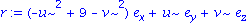
| > | plot3d( r, u=-3..3, v=-sqrt(9-u^2)..sqrt(9-u^2), labels=["x","y","z"] ); |
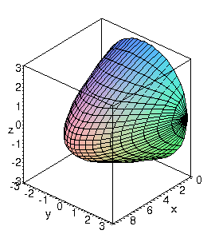
Parameterizations are not unique, however, and this one can be improved if we employ the usual sin/cos trick on y and z. (Equivalently, we use polar coordinates for the interior of y^2+z^2=9.)
| > | r:= < 9 - u^2, u*cos(v), u*sin(v) >; |
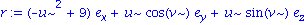
| > | plot3d( r, u=0..3, v=0..2*Pi, labels=["x","y","z"] ); |
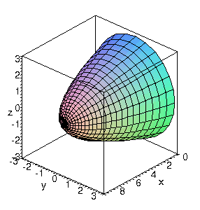
In addition to the sin/cos parameterization trick, there is also a sinh/cosh trick for hyperbolic surfaces.
| > | r:= < cosh(u)*cos(v), cosh(u)*sin(v), sinh(u) >; |
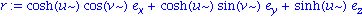
This is actually the one-sheet hyperboloid, x^2 + y^2 - z^2 = 1.
| > | simplify( r[1]^2 + r[2]^2 - r[3]^2 ); |

| > | plot3d( r, u=-1..1, v=0..2*Pi ); |
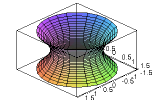
Here is a fancy parameterization: the torus.
| > | torus:= < (2+cos(u))*cos(v), (2+cos(u))*sin(v), 2+sin(u) >; |
| > | plot3d( torus, u=0..2*Pi, v=0..2*Pi, scaling=constrained ); |
![[Plot]](images/VectorFields3D_21.gif)
 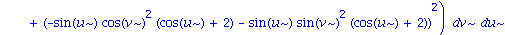
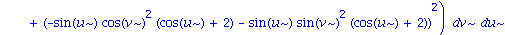